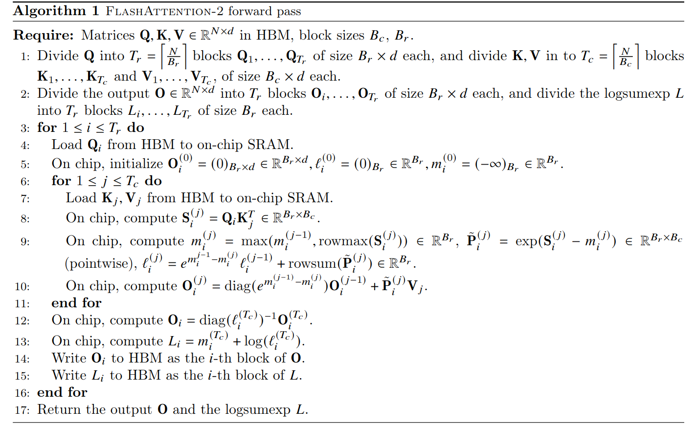
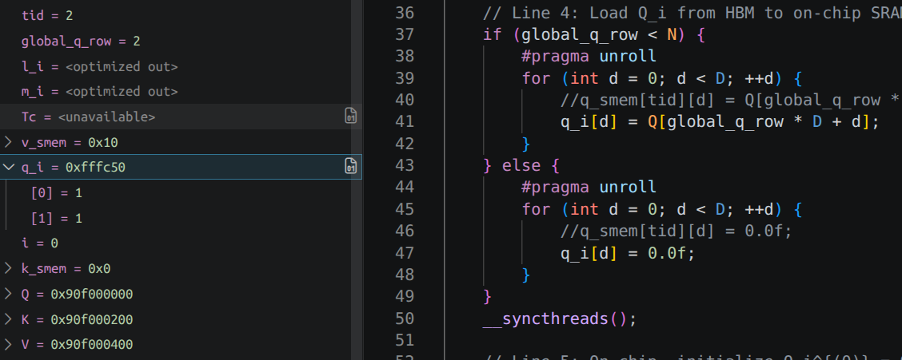
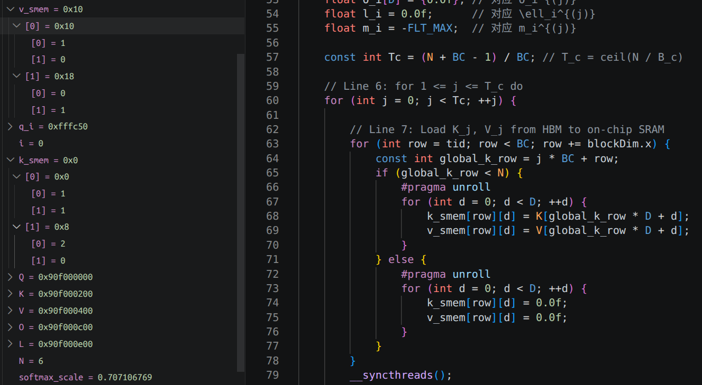

3.5 用CUDA实现FlashAttention V2
用CUDA实现FlashAttention V2¶
学习目标¶
- 理解FlashAttention V2的调试算法
- 学习代码flash-attn_v2_debug.cu
1. 回顾¶
FlashAttention V2 核心思想是通过调整计算顺序（外层循环遍历 Q 的块，内层循环遍历 K/V 的块），这样就可以计算一行时不用在内层循环反复加载和写入HBM。另外它消除了 FlashAttention V1 中不必要的重缩放（rescaling）步骤，从而减少了非矩阵乘法（Non-matmul）的 FLOPs 开销。在反向传播算法里重新计算P矩阵(Softmax)时需要保存已经算过的m和l来避免再次计算复杂的Reduce操作，V2通过把LogSumExp压缩到一个值来减少显存占用。

这个算法的正确性在第三节已经有非常形式化的证明。不过我们还是快速的回顾一下这个过程。
1.1. 单块的局部统计量¶
设某一个 Query 行（或块）与一系列 Key 块计算得到的原始注意力得分（未归一化）分块为 x^{(1)}, x^{(2)}, \dots, x^{(N)}。
对于第 j 个分块 x^{(j)}，定义其局部最大值和局部指数和分别为：
其对应的未归一化输出子项为：
1.2. 多块合并的递推公式¶
假设我们已经计算了前 j-1 个分块的累积统计量（全局最大值 m^{(1:j-1)}、累积指数和 l^{(1:j-1)} 以及未归一化输出 \tilde{O}^{(1:j-1)}），当引入第 j 个新分块时，更新规则如下：
- 全局最大值更新：
- 累积指数和更新：
- 未归一化输出更新：
最后，整个序列遍历结束后，真正的注意力输出为：
2. 内核启动代码¶
std::tuple<torch::Tensor, torch::Tensor> flash_attn_forward_v2(
torch::Tensor Q,
torch::Tensor K,
torch::Tensor V
) {
const int N = Q.size(0);
const int d = Q.size(1);
auto O = torch::empty_like(Q);
auto L = torch::empty({N}, Q.options());
const int grid_size = (N + BR - 1) / BR;
const int block_size = BR;
const float softmax_scale = 1.0f / std::sqrt(static_cast<float>(D));
cudaStream_t stream = c10::cuda::getCurrentCUDAStream();
flash_attn_v2<<<grid_size, block_size, 0, stream>>>(
Q.data_ptr<float>(),
K.data_ptr<float>(),
V.data_ptr<float>(),
O.data_ptr<float>(),
L.data_ptr<float>(),
N,
softmax_scale
);
return std::make_tuple(O, L);
}
和V1相比，这里多了一个返回值L。其实V1也可以返回L和m，只不过我们的代码是为了验证算法的正确性。因为L和m比较简单，我们就没有验证了，所以就没有返回。如果要做反向传播，也是需要返回L和m的。而V2我们需要验证LogSumExp，所以这里返回了L，而且这里的L不是原始L，而是融入了m信息的LogSumExp。
在C++里返回一个tuple可以使用std::make_tuple，当然函数的返回值声明需要改成std::tuple<torch::Tensor, torch::Tensor>。
我们要关注的重点是CUDA启动了多少个线程块，每个线程块多少线程。和flash-attn-no-softmax_v2_debug.cu类似，FlashAttention V2每个线程独立处理Query的每一行。所以我们可以每个线程块启动BR(B_r)个线程，总共启动N/BR个线程块，这样每个线程负责一行。
和上一节的方法一样，我们还是通过调试代码的方式按照模块讲解代码。完整的代码在：flash-attn-cpp/flash-attn_v2_debug.cu
3. 准备代码¶
__global__ void flash_attn_v2(
const float* __restrict__ Q,
const float* __restrict__ K,
const float* __restrict__ V,
float* __restrict__ O,
float* __restrict__ L, // FA-2 论文中输出的 logsumexp 向量 L
const int N,
const float softmax_scale
) {
// 算法 Line 3: 外层 Parallel / Grid 维度或 Block 维度分配 Q_i
const int i = blockIdx.x; // i-th block of Q
const int tid = threadIdx.x; // blockDim.x = BR
// Shared Memory 用于暂存 Q_i, K_j, V_j
// __shared__ float q_smem[BR][D];
float q_i[D];
__shared__ float k_smem[BC][D];
__shared__ float v_smem[BC][D];
const int global_q_row = i * BR + tid;
因为网格的总线程数等于Query的行数，每个线程复杂一行的计算，所以我们计算global_q_row = i * BR + tid。
4. 寄存器vs共享内存¶
另外一个值得注意的是：我们这里把共享内存q_smem[BR][D]改成了寄存器变量q_i[D]。其实上一节也可以这么改，原因是每个线程独立加载和使用q_smem的一行。
将共享内存（Shared Memory）中的 q_smem[BR][D] 改为每个线程私有的寄存器数组 float q_i[D]，有如下优缺点。
4.1 优点¶
- 彻底消除共享内存的 Bank Conflict：
当多个线程并发访问
q_smem[BR][D]进行矩阵乘法（例如计算 Q_i @ K_j^T）时，如果访问模式不当，极易产生共享内存的 Bank Conflict。改用寄存器后，每个线程独立持有自己的q_i数据，完全避开了共享内存的访存冲突。 - 极高的访存带宽与零延迟： 寄存器是 GPU 上速度最快、延迟最低的存储层次。将 Q_i 常驻寄存器意味着内层循环在反复与 K_j 计算时，不需要每次都去 Shared Memory 重新读取 Q，节省了共享内存的吞吐压力。
- 节省 Shared Memory 空间： Shared Memory 是宝贵的有限资源（每个 Streaming Multiprocessor 容量有限）。省去了 Q 块的存储后，可以将更多的 Shared Memory 留给 K 和 V 块（增大 BC），或者允许一个 SM 运行更多的线程块（提高占用率 Occupancy）。
4.2 缺点¶
- 加剧寄存器压力（Register Pressure）与降低 Occupancy：
每个线程需要分配大小为
D的寄存器数组（例如 D = 128 时，每个线程就要占用 128 个float，即 512 字节的寄存器空间）。如果加上其他临时变量，单线程的寄存器开销会急剧膨胀，可能导致每个 SM 能并发运行的线程块数量减少，甚至引发寄存器溢出（Spill to Local Memory/L1 Cache），导致性能暴跌。 - 代码灵活性受限（要求 BR 与线程模型高度绑定）：
使用
q_smem时，线程块内的所有线程可以协作加载、甚至互相读取 Q 的不同部分。而改成私有寄存器q_i[D]后，数据被严格“私有化”，如果后续算子需要线程之间协同洗牌（Shuffle）Q 的数据，实现起来会变得复杂。
4.3 怎么查看是否有寄存器溢出？¶
在编译 CUDA 代码时，向nvcc 传递 -Xptxas=-v（或 --ptxas-options=-v）参数。编译器在编译成功后，会在终端打印出每个 Kernel 的资源占用详细报告。
在CMake里，可以通过下面的方式实现：
target_compile_options(flash-attn_v2 PRIVATE
$<$<COMPILE_LANG_AND_ID:CUDA,NVIDIA>:-Xptxas=-v>
)
编译后会出现类似：
ptxas info : 10 bytes gmem, 80 bytes cmem[4]
ptxas info : Compiling entry function '_Z24flash_attn_v2_mha_kernelPKfS0_S0_PfS1_iiiif' for 'sm_89'
ptxas info : Function properties for _Z24flash_attn_v2_mha_kernelPKfS0_S0_PfS1_iiiif
6144 bytes stack frame, 0 bytes spill stores, 0 bytes spill loads
ptxas info : Used 40 registers, used 1 barriers, 6144 bytes cumulative stack size, 412 bytes cmem[0]
各项指标的具体含义如下：
6144 bytes stack frame/6144 bytes cumulative stack size： 每一个线程（Thread）在栈上分配了 6,144 字节（6 KB）的本地栈空间。0 bytes spill stores, 0 bytes spill loads： 它的意思是 寄存器溢出量为 0。尽管每个线程使用了栈空间，但没有发生寄存器被挤压到 Local Memory 中的情况。Used 40 registers： 每个线程实际占用了 40 个 32 位寄存器。
used 1 barriers： Kernel 内部使用了 1 个同步屏障（__syncthreads()），用于线程块内部的同步。412 bytes cmem[0]/80 bytes cmem[4]/10 bytes gmem： 编译器对常量内存（Constant Memory）和全局内存（Global Memory）元数据的静态分配情况。
在 NVIDIA Ada Lovelace 架构（Compute Capability 8.9，如 RTX 4090 / 4080 等消费级显卡）中，寄存器的硬件规格如下：
- 每个 SM（流式多处理器）的寄存器总量：64\text{K}（65,536）个 32 位（4 字节）寄存器。换算成容量大小是 256 KB。
- 单个线程的寄存器硬性上限：255 个 32 位寄存器。
4.4 对比¶
从总数据量来看，无论是每个线程私有的 float q_i[D]，还是整个 Block 共享的 __shared__ float q_smem[BR][D]，如果 BR 是线程数，它们所消耗的 总元素数量都是 BR \times D。
但是它们在 硬件资源的分配粒度（Granularity）和硬性上限 有着本质的不同：
4.4.1. 资源分配的维度：按“线程”切分 vs 按“Block”共享¶
- 寄存器（Register）是严格“按线程私有”分配的
- 硬件规定：单个线程的寄存器上限是 255 个。
- 当你写
float q_i[D]（假设 D=128）时，意味着 每一个线程 的私有口袋里必须同时装下这 128 个变量。 - 也就是说，硬件检查的是 单个线程 是否超出了 255 的限制，而不是看整个 Block 的总和。因此，当单线程需求达到 128（加其他变量直接超 255）时，它立刻就会触发溢出。
- 共享内存（Shared Memory）是“按 Block 整体”分配的
- 共享内存是一个 公共大水池（一个 Block 共享几十 KB 到上百 KB）。
- 当你写
__shared__ float q_smem[BR][D]时，这 BR \times D 的数据是被整个 Block 的所有线程 共同放在这个大水池里 的。只要这个水池的总大小不超过 Block 的上限（例如 48 KB ~ 96 KB），它就能合法存在。至于具体的某一个线程，它在计算时只需要用寄存器临时装载当前需要的几个元素（比如一个或几个float），用完即弃，不需要每个线程都背负完整的一整条 D。
4.4.2. 寻址与编译器行为的差异¶
- 寄存器不支持动态数组成员寻址：
当你声明一个较大的私有数组
float q_i[D]并且在循环中使用变量去索引它时（例如q_i[k]），GPU 的寄存器硬件底层是不支持像内存那样通过动态变址来访问寄存器堆的。编译器为了让这种数组合法化，必须 把它从寄存器强行挪到栈空间（Local Memory / 显存）里，这就是为什么会凭空多出几 KB 栈帧和 Spill 的根本原因。 - 共享内存天然支持任意指针与索引寻址： Shared Memory 在物理上就是一块标准的 SRAM 内存，支持标准的指针偏移、下标索引和任意并发读写，完全不会触发这种编译器限制。
关于这两者的实验对比，在后面的章节介绍。
5. 加载Q¶
// Line 4: Load Q_i from HBM to on-chip SRAM
if (global_q_row < N) {
#pragma unroll
for (int d = 0; d < D; ++d) {
//q_smem[tid][d] = Q[global_q_row * D + d];
q_i[d] = Q[global_q_row * D + d];
}
} else {
#pragma unroll
for (int d = 0; d < D; ++d) {
//q_smem[tid][d] = 0.0f;
q_i[d] = 0.0f;
}
}
每个线程负责把自己用到的那一行global_q_row * D + d从全局内存加载到本地寄存器。结果如下图：

6. 初始化O,l和m¶
// Line 5: On chip, initialize O_i^{(0)} = 0, l_i^{(0)} = 0, m_i^{(0)} = -inf
float O_i[D] = {0.0f}; // 对应 O_i^{(j)}
float l_i = 0.0f; // 对应 \ell_i^{(j)}
float m_i = -FLT_MAX; // 对应 m_i^{(j)}
这是FlashAttention V2的最主要改进：不需要每次内部循环读取和写入这些变量到HBM，只需要定义一个函数范围内的这些变量即可。
7. 内部循环(第一次)¶
const int Tc = (N + BC - 1) / BC; // T_c = ceil(N / B_c)
// Line 6: for 1 <= j <= T_c do
for (int j = 0; j < Tc; ++j) {
因为一个线程负责一行，所以不需要外层循环。这个循环对应论文里的“内部”循环，用来遍历K和V块，所以这里的循环次数是Tc。
8. 加载K和V数据块¶
// Line 7: Load K_j, V_j from HBM to on-chip SRAM
for (int row = tid; row < BC; row += blockDim.x) {
const int global_k_row = j * BC + row;
if (global_k_row < N) {
#pragma unroll
for (int d = 0; d < D; ++d) {
k_smem[row][d] = K[global_k_row * D + d];
v_smem[row][d] = V[global_k_row * D + d];
}
} else {
#pragma unroll
for (int d = 0; d < D; ++d) {
k_smem[row][d] = 0.0f;
v_smem[row][d] = 0.0f;
}
}
}
__syncthreads();
这个代码和`flash-attn-no-softmax_v2_debug.cu完全一样，加载的结果如下图：

9. 计算S_{ij}¶
// Line 8: On chip, compute S_i^{(j)} = Q_i * K_j^T
float S_i_j[BC];
float rowmax_S = -FLT_MAX;
#pragma unroll
for (int col = 0; col < BC; ++col) {
const int global_k_row = j * BC + col;
if (global_k_row < N) {
float score = 0.0f;
#pragma unroll
for (int d = 0; d < D; ++d) {
score += q_i[d] * k_smem[col][d];
}
score *= softmax_scale;
S_i_j[col] = score;
rowmax_S = fmaxf(rowmax_S, score);
} else {
S_i_j[col] = -FLT_MAX;
}
注意：这里的变量命名完全参考论文，虽然我们现在是一个线程处理一行，变量的名字中还是有一个i。比如S_i_j，其实只有j一个维度(BC)。
计算过程如下：
9.1. 初始化变量¶
q_i = [1.0, 1.0]k_smem = [[1.0, 1.0], [2.0, 0.0]]（BC = 2,D = 2）softmax_scale = 0.707106769rowmax_S = -FLT_MAXS_i_j数组大小为 2
9.2. 遍历 col 索引计算注意力得分 S_i^{(j)}¶
-
当
col = 0时：- 内层循环
d从 0 到 1：d = 0:score += q_i[0] * k_smem[0][0]\rightarrow1.0 * 1.0 = 1.0d = 1:score += q_i[1] * k_smem[0][1]\rightarrow1.0 * 1.0 = 1.0
- 累加结果：
score = 2.0
- 乘以缩放因子：
score *= 0.707106769\rightarrow2.0 * 0.707106769 ≈ 1.4142135 - 存入数组：
S_i_j[0] = 1.4142135 - 更新行最大值：
rowmax_S = fmaxf(-FLT_MAX, 1.4142135) = 1.4142135
- 内层循环
-
当
col = 1时：- 内层循环
d从 0 到 1：d = 0:score += q_i[0] * k_smem[1][0]\rightarrow1.0 * 2.0 = 2.0d = 1:score += q_i[1] * k_smem[1][1]\rightarrow1.0 * 0.0 = 0.0
- 累加结果：
score = 2.0
- 乘以缩放因子：
score *= 0.707106769\rightarrow2.0 * 0.707106769 ≈ 1.4142135 - 存入数组：
S_i_j[1] = 1.4142135 - 更新行最大值：
rowmax_S = fmaxf(1.4142135, 1.4142135) = 1.4142135
- 内层循环
9.3. 结果¶
S_i_j = [1.4142135, 1.4142135]rowmax_S = 1.4142135
10. 更新m_{ij}¶
// Line 9: On chip, compute m_i^{(j)} = max(m_i^{(j-1)}, rowmax(S_i^{(j)}))
float m_i_prev = m_i;
float m_i_j = fmaxf(m_i_prev, rowmax_S);
11. 计算\tilde{P}_{ij}和rowsum(\tilde{P}_{ij})¶
注意：这里和V1的区别！在V1里，这里减去的是这个块的最大值\tilde{m}_{ij}，V2直接减去的是当前最大值m_i^{(j)}。这样的好处就是后面不用对它进行修正了。
// Line 9: P_tilde_i^{(j)} = exp(S_i^{(j)} - m_i^{(j)})
float P_tilde_j[BC];
float rowsum_P_tilde = 0.0f;
#pragma unroll
for (int col = 0; col < BC; ++col) {
const int global_k_row = j * BC + col;
if (global_k_row < N) {
P_tilde_j[col] = expf(S_i_j[col] - m_i_j);
rowsum_P_tilde += P_tilde_j[col];
} else {
P_tilde_j[col] = 0.0f;
}
}
11.1. 前置状态¶
- 上一步得到的得分数组：
S_i_j = [1.4142135, 1.4142135] - 当前行的最大值：
rowmax_S = 1.4142135 m_i_prev = -FLT_MAXm_i_j = 1.4142135
11.2. 遍历 col 计算缩放指数及行和¶
- 当
col = 0时：- 计算 S_i^{(0)} - m_i^{(j)}：
1.4142135 - 1.4142135 = 0.0f - 计算指数：
P_tilde_j[0] = expf(0.0f) = 1.0f - 累加行和：
rowsum_P_tilde = 0.0f + 1.0f = 1.0f
- 计算 S_i^{(0)} - m_i^{(j)}：
- 当
col = 1时：- 计算 S_i^{(1)} - m_i^{(j)}：
1.4142135 - 1.4142135 = 0.0f - 计算指数：
P_tilde_j[1] = expf(0.0f) = 1.0f - 累加行和：
rowsum_P_tilde = 1.0f + 1.0f = 2.0f
- 计算 S_i^{(1)} - m_i^{(j)}：
11.3. 运行结果¶
P_tilde_j = [1.0f, 1.0f]rowsum_P_tilde = 2.0f
12. 计算\ell_i^{(j)}¶
计算公式为：
前面已经说过，\tilde{P}_i^{(j)}已经减去的是全局最大值，所以不用修正。我们只需要用alpha=e^{m_i^{(j-1)} - m_i^{(j)}}修正l_i即可。
// Line 9: \ell_i^{(j)} = e^{m_i^{(j-1)} - m_i^{(j)}} * \ell_i^{(j-1)} + rowsum(\tilde{P}_i^{(j)})
float alpha = expf(m_i_prev - m_i_j);
float l_i_j = alpha * l_i + rowsum_P_tilde;
本次执行时，l_i=0，所以l_i_j=rowsum_P_tilde=2。
13. 计算O_i^{(j)}¶
计算公式为：
// Line 10: On chip, compute O_i^{(j)} = diag(e^{m_i^{(j-1)} - m_i^{(j)}}) * O_i^{(j-1)} + P_tilde_i^{(j)} * V_j
#pragma unroll
for (int d = 0; d < D; ++d) {
float p_v = 0.0f;
#pragma unroll
for (int col = 0; col < BC; ++col) {
p_v += P_tilde_j[col] * v_smem[col][d];
}
// Rescale 旧的 O_i 并加上当前分块贡献
O_i[d] = alpha * O_i[d] + p_v;
和上一节相同，我们还是把对维度d的循环放到外面，从而减少变量占用的空间。最关键的就是：
具体计算过程如下：
13.1 遍历特征维度 d 计算加权求和及状态更新¶
-
当
d = 0时：- 初始化当前维度的累加器：
p_v = 0.0f - 遍历
col累加P_tilde_j[col] * v_smem[col][0]：col = 0:p_v += 1.0 * 1.0 = 1.0col = 1:p_v += 1.0 * 0.0 = 0.0
- 得到
p_v = 1.0f
- 更新
O_i[0]：O_i[0] = alpha * O_i[0] + p_v = 0.0f * 0.0f + 1.0f = 1.0f
- 初始化当前维度的累加器：
- 当
d = 1时：- 初始化当前维度的累加器：
p_v = 0.0f - 遍历
col累加P_tilde_j[col] * v_smem[col][1]：col = 0:p_v += 1.0 * 0.0 = 0.0col = 1:p_v += 1.0 * 1.0 = 1.0
- 得到
p_v = 1.0f
- 初始化当前维度的累加器：
- 更新
O_i[1]：O_i[1] = alpha * O_i[1] + p_v = 0.0f * 0.0f + 1.0f = 1.0f
13.2. 本轮循环结束后的最终状态¶
O_i = [1.0f, 1.0f]m_i = 1.4142135l_i = 2.0f
14. 第二次内部循环¶
14.1. 加载 K_1, V_1 到共享内存¶
row = 0\rightarrowglobal_k_row = 2: K[2] = [0.0, 1.0], V[2] = [2.0, 1.0]row = 1\rightarrowglobal_k_row = 3: K[3] = [1.0, 2.0], V[3] = [1.0, 1.0]k_smem = [[0.0, 1.0], [1.0, 2.0]]v_smem = [[2.0, 1.0], [1.0, 1.0]]
14.2. 计算注意力得分 S_i^{(1)} 与行最大值¶
col = 0:score = (1.0*0.0 + 1.0*1.0) * 0.707106769 = 0.707106769col = 1:score = (1.0*1.0 + 1.0*2.0) * 0.707106769 = 2.1213203S_i_j = [0.707106769, 2.1213203]rowmax_S = 2.1213203
14.3. 更新最大值与计算指数分块权重 \tilde{P}^{(1)}¶
m_i_prev = 1.4142135m_i_j = max(1.4142135, 2.1213203) = 2.1213203col = 0:P_tilde_j[0] = exp(0.707106769 - 2.1213203) ≈ 0.243116col = 1:P_tilde_j[1] = exp(2.1213203 - 2.1213203) = 1.0frowsum_P_tilde = 0.243116 + 1.0 = 1.243116
14.4. 计算衰减因子 \alpha、更新分母 \ell_i 与输出 O_i¶
alpha = exp(1.4142135 - 2.1213203) ≈ 0.493069l_i_j = 0.493069 * 2.0 + 1.243116 ≈ 2.229254- 更新 O_i：
d = 0:p_v = 0.243116 * 2.0 + 1.0 * 1.0 = 1.486232\rightarrowO_i[0] = 0.493069 * 1.0 + 1.486232 ≈ 1.979301d = 1:p_v = 0.243116 * 1.0 + 1.0 * 1.0 = 1.243116\rightarrowO_i[1] = 0.493069 * 1.0 + 1.243116 ≈ 1.734185
- 本轮迭代结束后的状态：
m_i = 2.1213203l_i = 2.229254O_i = [1.979301, 1.734185]
15. 第三次内部循环¶
15.1. 加载 K_2, V_2 到共享内存¶
row = 0\rightarrowglobal_k_row = 4: K[4] = [2.0, 1.0], V[4] = [0.0, 2.0]row = 1\rightarrowglobal_k_row = 5: K[5] = [0.0, 2.0], V[5] = [2.0, 2.0]k_smem = [[2.0, 1.0], [0.0, 2.0]]v_smem = [[0.0, 2.0], [2.0, 2.0]]
15.2. 计算注意力得分 S_i^{(2)} 与行最大值¶
col = 0:score = (1.0*2.0 + 1.0*1.0) * 0.707106769 = 2.1213203col = 1:score = (1.0*0.0 + 1.0*2.0) * 0.707106769 = 1.4142135S_i_j = [2.1213203, 1.4142135]rowmax_S = 2.1213203
15.3. 更新最大值与计算指数分块权重 \tilde{P}^{(2)}¶
m_i_prev = 2.1213203m_i_j = max(2.1213203, 2.1213203) = 2.1213203col = 0:P_tilde_j[0] = exp(2.1213203 - 2.1213203) = 1.0fcol = 1:P_tilde_j[1] = exp(1.4142135 - 2.1213203) ≈ 0.493069rowsum_P_tilde = 1.0 + 0.493069 = 1.493069
15.4. 计算衰减因子 \alpha、更新分母 \ell_i 与输出 O_i¶
alpha = exp(2.1213203 - 2.1213203) = 1.0fl_i_j = 1.0 * 2.229254 + 1.493069 ≈ 3.722323- 更新 O_i：
d = 0:p_v = 1.0 * 0.0 + 0.493069 * 2.0 = 0.986138\rightarrowO_i[0] = 1.0 * 1.979301 + 0.986138 ≈ 2.965439d = 1:p_v = 1.0 * 2.0 + 0.493069 * 2.0 = 2.986138\rightarrowO_i[1] = 1.0 * 1.734185 + 2.986138 ≈ 4.720323
- 最终循环结束后的输出状态：
m_i = 2.1213203l_i = 3.722323O_i = [2.965439, 4.720323]
16. 归一化¶
首先对O_i进行归一化并且写回，计算公式为：
然后计算L_i，公式为：
// Line 12: On chip, compute O_i = diag(\ell_i^{(T_c)})^{-1} * O_i^{(T_c)}
float inv_l_i = (l_i > 0.0f) ? (1.0f / l_i) : 0.0f;
#pragma unroll
for (int d = 0; d < D; ++d) {
O_i[d] *= inv_l_i;
}
// Line 13: On chip, compute L_i = m_i^{(T_c)} + log(\ell_i^{(T_c)})
float L_i = m_i + logf(l_i);
// Line 14: Write O_i to HBM as the i-th block of O
#pragma unroll
for (int d = 0; d < D; ++d) {
O[global_q_row * D + d] = O_i[d];
}
// Line 15: Write L_i to HBM as the i-th block of L
if (L != nullptr) {
L[global_q_row] = L_i;
}